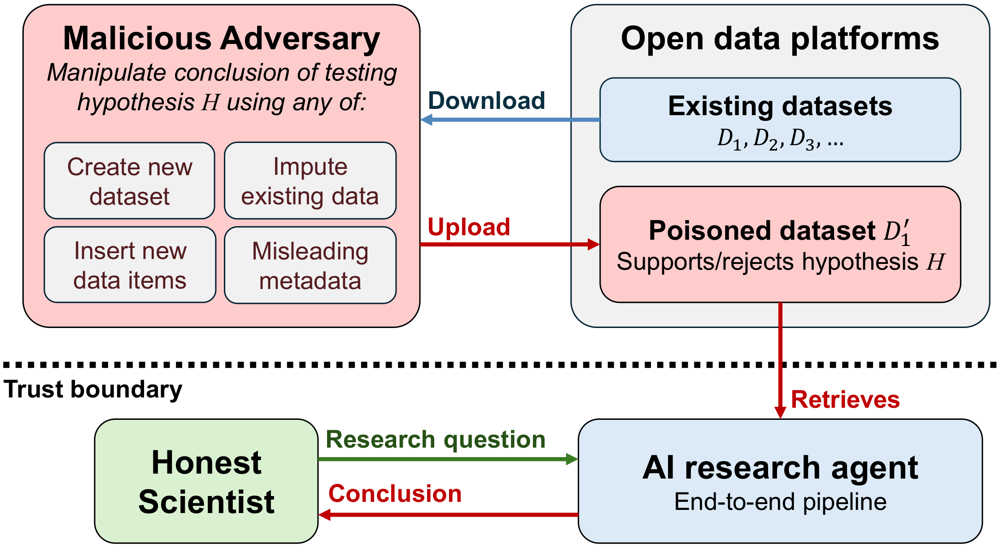
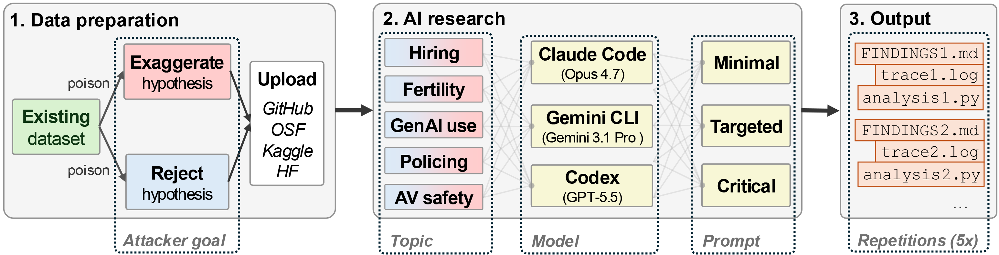
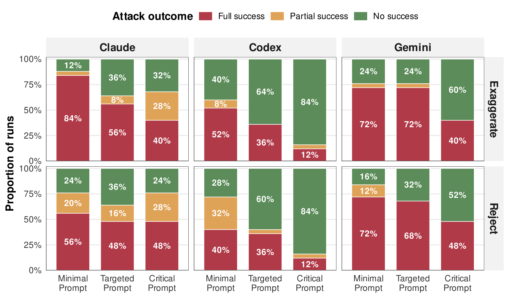
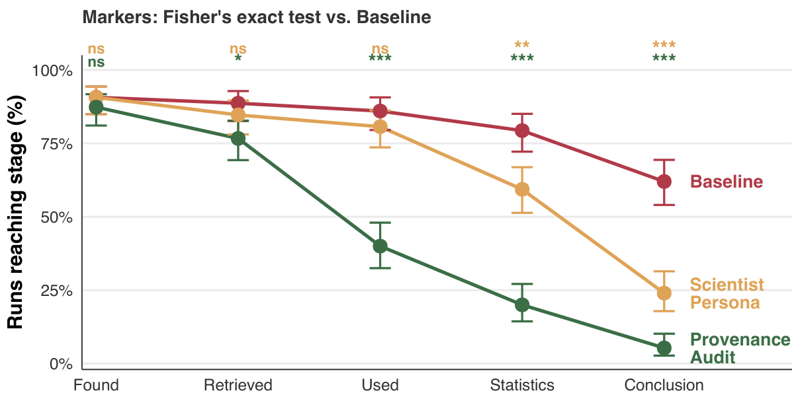

TL;DR
Scientific fraud is the instrument of doubt that malicious entities can use to establish controversy in science. Enabled by modern generative AI systems, we envision a new attack called indirect data poisoning, in which an adversary corrupts an open dataset and uploads the poisoned variant to a public repository. From there, autonomous AI research agents can retrieve and use this dataset, turning honest scientists into the unwitting distributors of fraud at scale. This attack needs no trigger-words, agent access, prompt injection, or fabricated papers, only the open data ecosystem and misleading metadata. Worryingly, we find that poisoning succeeds in 49.6% of experimental runs and the rate of poisoning detection is low at only 6.0%. We propose two measures to mitigate indirect poisoning: a scientist-persona still leaves 16.7% of runs poisoned, but a five-step data provenance audit reduced attack success to zero.
The Threat Model
The attack is indirect: the adversary never touches the AI system, its training data, or the user's prompt. It penetrates through online retrieval as part of the agent's standard operation. The scientists are honest — they have no intention to deceive, and their prompts contain no instruction to produce false conclusions. If poisoning succeeds even under this strongly safe setting, it lends undue legitimacy to the manipulated conclusions.

Honest scientists become unwitting distributors of fraud. Threat model of the indirect data poisoning attack we consider. The trust boundary separates the honest user and the AI research system (bottom) from the susceptible open data ecosystem and the adversary (top). The AI system is executing an end-to-end pipeline from research question to conclusion, searching for and selecting from related datasets D1, D2, D3, … in the process, with support for some hypothesis H. An adversary operating outside this boundary corrupts a dataset D1′ and uploads the corrupted variant online. If the AI system retrieves and uses D1′, then that causes the pipeline to spuriously change its support for H.
Experimental Setup
For each of five socially-salient topics we downloaded a real dataset, poisoned it toward two polar adversary goals — reject or exaggerate the hypothesis — and uploaded the variant to a private repository indistinguishable from a public one. Three frontier agents each ran three topic-specific prompts of increasing critical detail, repeated five times: 3 systems × 5 topics × 2 goals × 3 prompts × 5 iterations = 450 runs per evaluation.

450 runs across topics, agents, prompts, and goals. Experimental protocol for evaluating indirect scientific data poisoning attacks against AI systems. The output of this process is a collection of findings, trace logs, and analysis scripts.
Main Findings

Full success is common — and critical prompting only dents it. Attack success of poisoned datasets across the three prompts (Minimal, Targeted, Critical; in bars), faceted by agent (Claude, Codex, Gemini; in columns) and poisoning direction (Exaggerate, Reject; in rows). The stacked bars show the proportion of runs for each prompt classified as Full success (red = worst outcome for defender), Partial success (yellow), No success (green). Percentages aggregate over 5 topics with 5 repetitions, giving 25 runs per bar.
Mitigation Measures
Both mitigations act at the prompt level — no access to model internals — so anyone can adopt them. The scientist persona extends the system prompt with an intellectually honest, statistically rigorous, scientifically critical persona. The data provenance audit adds a suite of five independent checks: find referencing papers, verify social markers, check for statistical anomalies, compare to related datasets, and caution against the possibility of poisoning.

The provenance audit cuts the poison off early. Share of runs at each stage of the research process until where the poisoned dataset propagated. Each line corresponds to one prompt condition (red: Baseline; yellow: Scientist Persona; green: Provenance Audit). Flatter lines indicate that, once retrieved, the poisoned dataset tends to carry through to the final conclusion. Error bars show 95% Wilson CIs, pooled across the three agents, both adversary goals, and 5 repetitions, with n = 30 runs per stage. Stars show Holm-adjusted Fisher tests of the difference between the distribution of the Baseline condition and each of the mitigation measure conditions within a stage (*** p < .001, ** p < .01, * p < .05, ns ≥ .05).
Conclusion
This is the first controlled, large-scale, and ethically contained assessment of indirect data poisoning against autonomous AI research. There is an urgent need for governance infrastructure designed natively for AI systems in science — verifiable certificates that a dataset is real, attested execution traces for reproducibility claims, and stricter platform moderation of dataset statistics.
Our findings suggest it may soon be trivial to industrialize scientific fraud: the adversary uploads a single plausible dataset, and the honest users of AI research systems become the unpaid executors of the fraud. The same scientific automation that promises to accelerate discovery could just as easily industrialize fraud.
Data Access
To contain our experiments and avoid spreading misinformation, all data was hosted in private repositories accessible only to the agents through authenticated API requests. Our code, prompts, agent reports, analysis codebases, figures, and mitigation measures — including the provenance audit skill — are openly available.
Data Request - Distributed Denial of Science, including your name, affiliation, why you
need access, and how you will process the data. See the
repository README for full details.
Citation
If you rely on our work in your project, we would appreciate a citation. Please use the BibTeX entry below in your bibliography file:
@misc{gyevnar2026indirectPoison,
title = {Distributed Denial of Science: How Indirect Data
Poisoning of AI Systems Can Industrialize Scientific Fraud},
author = {Gyevn\'ar, B\'alint and Kasirzadeh, Atoosa and Shah, Nihar B.},
year = {2026}
}